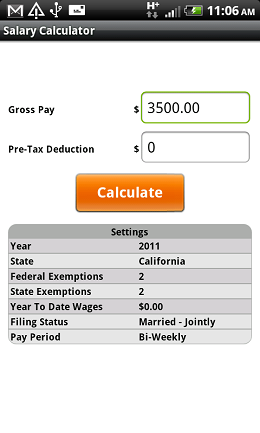
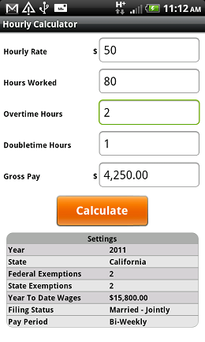
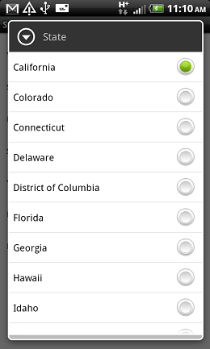
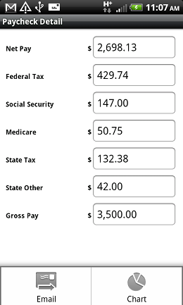
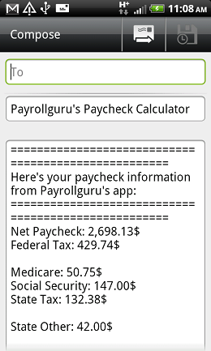
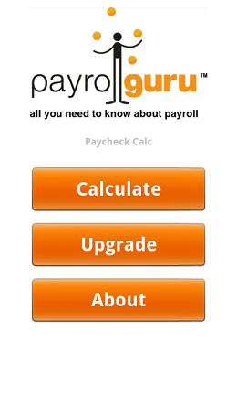
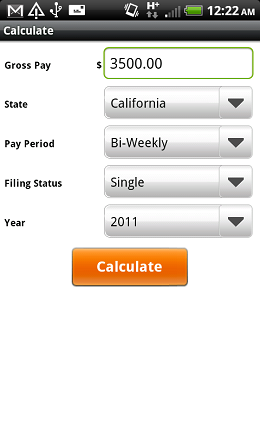
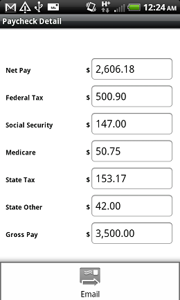

|
| ||
Payroll Guru and Paycheck Calculator for AndroidUse free or paid Paycheck Calculator app and precise Payroll Guru app to calculate employee's payroll check in the residence state.Calculate net paycheck, federal taxes, payroll withholdings, including SDI and SUI payroll state taxes with ease and on the go. | ||
|
Paycheck Free
|
Paycheck Calc
|
Payroll Guru
|
Payroll Guru App for AndroidPayroll Guru is a most precise payroll calculator app fro Android.Payroll Guru will calculate net paycheck, federal taxes, payroll withholdings, including SDI and SUI payroll state taxes. It will display calculated paycheck on smartphone's screen, and show a pie chart of paycheck distribution. Also it can email payroll check information to employee or employer. | ||
| Main menu |
Salary Employee Calculation  |
Hourly Employee Calculation  |
| State Selection  |
Paycheck Details  |
Email Paycheck Info  |
FeaturesPayrollguru's mobile apps can be utilized to calculate net payroll check amount and compare take home amounts (after payroll taxes) in different states. Employee earnings will vary from state to state, based on the state income taxes and rates (i.e. very high in California and New York, and no state income taxes in Alaska, Texas, Florida, Nevada, Washington states). Using free Android payroll calculator or Android payroll calculator you can compare how employee's base salary translates into net earnings (after tax) in the state of employment. Android Paycheck Calculator app can be particular useful in case of considering a job in a different state you can compare how much you will make after taxes in that state. Also you can use mobile paycheck calculator apps to verify accuracy of your employers paycheck calculation. In case of the difference in net paycheck amounts please talk to your human resource department or payroll specialist and discuss your paycheck information in details, Payrollguru app will calculate state withholdings for the following states: California, New York, Texas, Florida, Illinois, Washington, Alaska, Nevada, New Hampshire, South Dakota, Tennessee, Wyoming, Georgia, Virginia, Louisiana, Oregon, Pensylvania, Noth Carolina, Ohio, New Jersey, New Mexico, Minnesota, Mississippi, Oklahoma, Delaware, Arkansas, Wisconsin, Colorado, Kansas, Michigan, South Carolina, Indiana, District of Columbia, Arizona, Idaho, Iowa, Missouri, Alabama, Massachusetts, Maryland, Kentucky, Nebraska, Utah, Connecticut, West Virginia, Maine, North Dakota, Rhode Island, Montana, Hawaii, Vermont.Paycheck Calculator for AndroidPayroll Calculator is a scaled down version of Payroll Guru app for Android.Payroll Guru will calculate net paycheck, federal taxes, payroll withholdings, including SDI and SUI payroll state taxes. It will also display calculated paycheck on smartphone's screen andcan email payroll check information to employee or employer. | ||
| Main menu  |
Salary Calculation  |
Paycheck Details  |
Paycheck Calculator for Android Details.Android Paycheck calculator comes in 2 types (when available): free app and a paid app. Paycheck calculator provides you with the estimate of you payroll check. You can calculate the net pay amount and all taxes, and email the paycheck details to anybody. The estimated paycheck is very close to actual payroll calculation, but it doesn't take into account employees Federal Exemptions, State Exemptions, and earned Year to date wages. The main differemce between Payrollguru's free paycheck calculator and paid app is that the free app will display ads. Also, there's a daily limit of on the number of payrol calulations that one can do in a free app. To remove the ads and to remove the limitations please get a paid Paycheck Calculator app for your Android or iPad.Paycheck Calc app will calculate state withholdings for the following states: California, New York, Texas, Florida, Illinois, Washington, Alaska, Nevada, New Hampshire, South Dakota, Tennessee, Wyoming, Georgia, Virginia, Louisiana, Oregon, Pensylvania, Noth Carolina, Ohio, New Jersey, New Mexico, Minnesota, Mississippi, Oklahoma, Delaware, Arkansas, Wisconsin, Colorado, Kansas, Michigan, South Carolina, Indiana, District of Columbia, Arizona, Idaho, Iowa, Missouri, Alabama, Massachusetts, Maryland, Kentucky, Nebraska, Utah, Connecticut, West Virginia, Maine, North Dakota, Rhode Island, Montana, Hawaii, Vermont. | ||
To get accurate payroll calculations please upgrade to Payroll Guru app which handles all these additional parameters to calculate accurate payroll check.
Payroll Guru app also handles Salary and Hourly payroll calculations, and gives you a visual representation in the form of a pie-chart of the distribution of you paycheck parts.
Also, with Payroll Guru app you can store user's settings which speeds minimizes the data entry and allows for fast paycheck calculation. Please note, that no personal or confidential information is stored on the Android or iPad.
Payrollguru Tax EnginePaycheck Calculator apps and Payroll Guru utilizes fast and accurate Payrollguru's Tax Engine (PTE), which has been modified for 2011 and includes all the latest tax information.Disclaimer:Even though Payrollguru strives to provide you with the most accurate payroll calculation, Payrollguru, Inc. doesn't guarantee or implies the complete accuracy of the actual payroll calculation. Please rely on the payroll service provider to guarantee the correct payroll and tax calculations.Reviews and recomendationsIf you would like to write a review or provide a recommendation please contact us at support email for promotional code.About Payrollguru.mobiPayrollguru.mobi is an information hub for mobile payroll applications and provides information in regards to current Android payroll apps, Android payroll apps, as well as iPad and Windows Phone 7 payroll apps.Enjoy using Payrollguru's free or paid payroll applications on your Android. Copyright 2011. Payrollguru.mobi. Payrollguru is a registered trademark of Payrollguru, Inc. |
||